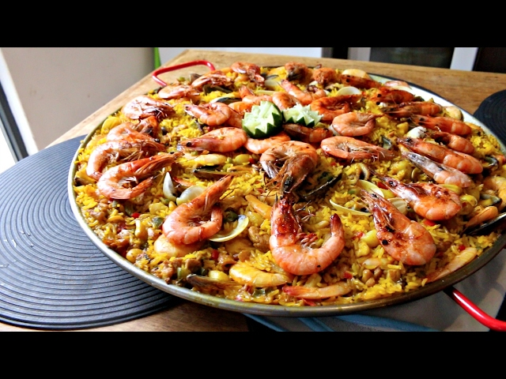

Sinfonía de Sabores: Authentic Spanish Seafood Paella

Embark on a culinary journey with our "Seafood Symphony" Spanish Paella, a vibrant and easy-to-follow recipe that
captures the essence of traditional Spanish flavors. This one-pan wonder combines succulent seafood, tender
chicken, and a medley of fresh vegetables, all harmonized with saffron-infused rice for a taste of Spain in
every bite.
To create this flavor-packed dish, sauté chicken and rabbit (optional) until golden, then build a savory base
with onions, garlic, and bell pepper. The rice absorbs the aromatic broth, while green beans and peas join the
ensemble. Seafood takes center stage, simmering until tender, and the result is a communal feast that's as easy
to make as it is to enjoy. Garnish with lemon wedges and savor the "Seafood Symphony" – a celebration of Spanish
cuisine that's perfect for any occasion!
Ingredients
- 2 cups bomba or short-grain rice
- 1 pound mixed seafood (shrimp, mussels, squid)
- 1/2 pound chicken, cut into bite-sized pieces
- 1/2 pound rabbit, cut into pieces (optional)
- 1 large onion, finely chopped
- 4 cloves garlic, minced
- 1 red bell pepper, diced
- 1 ripe tomato, grated
- 1/2 cup green beans, trimmed and halved
- 1/2 cup peas
- 4 cups chicken broth
- 1 teaspoon saffron threads
- 1 teaspoon sweet paprika
- 1/2 teaspoon smoked paprika
- Salt and pepper to taste
- 1/4 cup olive oil
- Lemon wedges for serving
Steps
-
Prepare the Broth:
- In a saucepan, heat the chicken broth. Add saffron threads and let them steep to infuse the broth with
color
and flavor.
-
Prep the Ingredients:
- Season the chicken and rabbit (if using) with salt, pepper, and sweet paprika.
- In a large, shallow paella pan, heat olive oil over medium heat.
-
Sear the Meats:
- Brown the chicken and rabbit in the paella pan until golden on all sides. Remove and set aside.
-
Sauté the Vegetables:
- In the same pan, add more olive oil if needed and sauté the onions until translucent.
- Add garlic and bell pepper, cooking until softened.
-
Incorporate the Tomato:
- Stir in the grated tomato, cooking until it forms a sofrito, a rich, thick sauce.
-
Add the Rice:
- Sprinkle the rice into the pan, stirring to coat it with the sofrito mixture.
-
Season and Add Broth:
- Season with smoked paprika, salt, and pepper.
- Pour in the saffron-infused broth, distributing it evenly over the rice.
-
Arrange the Meats:
- Place the browned chicken and rabbit back into the pan, nestling them into the rice.
-
Distribute the Vegetables:
- Scatter green beans and peas evenly across the paella.
-
Simmer and Cook:
- Bring the mixture to a simmer, then reduce heat to low. Let it cook undisturbed for about 15-20
minutes or
until the rice is almost tender.
-
Add Seafood:
- Gently nestle the seafood into the rice, ensuring even distribution.
-
Finish Cooking:
- Continue simmering until the rice is cooked, the broth is absorbed, and a crust (socarrat) forms on
the
bottom.
-
Rest and Serve:
- Remove from heat and let the paella rest for a few minutes before serving.
- Garnish with lemon wedges and serve directly from the pan, allowing everyone to savor the communal
experience.
Enjoy this symphony of flavors in your homemade Spanish seafood paella!